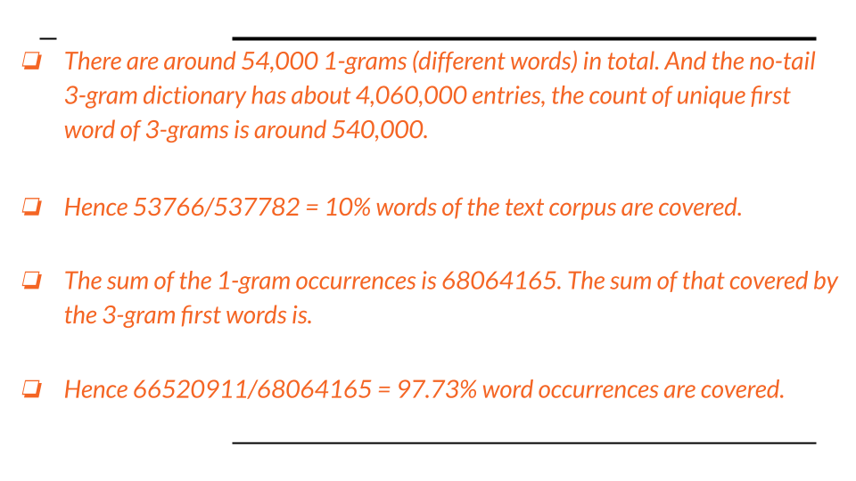

Slidify Demo
Use arrows to get to the next slide
Olga Koroleva
Student
Introduction about the App
- The Shiny app uses 3-gram dictionary.
- It will match the last two words of an input with the first two words of entries in the dictionary, to predict the third word.
- If no entries found, it will instead match the last word of the input only. If no entries found again, it will return the most frequent 3-grams as result.
N-gram Dictionary
Animated List
- Get 2-grams and 3-grams (with stopwords).
- tokenize_ngrams(, n_min=2, n=3)
>
- To reduce the N-gram dictionary size, first calculate frequency for each N-gram, then abandon the least frequent ones (the long tail), say the ones only cover 10% of occurrences or the ones that only appear once in the text corpus.
- E.g. The total count of 1-gram is around 540,000. We would only need 6,000 words to cover 90% of the occurrences.
Some fun statistics

Thank you
Have a great day
Thank you for your time assessing this!